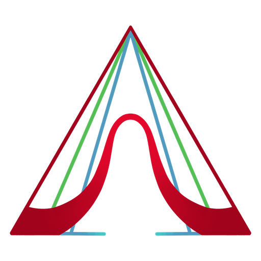

exFuzzy LabSource & licenses.
exFuzzy Lab is distributed under AGPL-3.0-or-later. The source below is the source running in this website. Your dataset is processed only inside the browser worker and is never included in this source archive.
Download application source AGPL license
Application files
Buildless HTML, CSS, JavaScript and a shared Python experiment engine. Serve the dist folder with any static HTTP server.
index.html · style.css · app.js · explorer.js · worker.js · engine.py
exFuzzy 3.3.0
The official, unmodified Python wheel is included with the app. exFuzzy is licensed under AGPL-3.0-or-later. The browser uses its FuzzyRulesClassifier, native fuzzy partitions, rule mining and genetic rule selection.
Version 3.3.0 source · Download exFuzzy source · Official wheel
PyMoo in the browser
The genetic learners use PyMoo 0.6.1.6 (Apache-2.0), vendored as a pure-Python wheel built from the official package without its optional Cython speed-ups, together with its pure-Python dependencies: autograd (MIT), cma (BSD-3-Clause), alive-progress (MIT), about-time (MIT), grapheme (MIT), Deprecated (MIT) and wrapt (BSD-2-Clause). moocore is a small stub that only lets PyMoo import; exFuzzy's single-objective search never uses it. All wheels are in vendor/.
Runtime and datasets
The Python runtime is Pyodide 0.29.5 (MPL-2.0) with NumPy, pandas, SciPy and scikit-learn (BSD-3-Clause), micropip (MPL-2.0), joblib (BSD-3-Clause), threadpoolctl (BSD-3-Clause), python-dateutil (Apache-2.0 / BSD-3-Clause), pytz (MIT) and six (MIT) from the official Pyodide package distribution, mirrored in pyodide/ so the app loads them from this site. DM Sans and Manrope are served by Google Fonts. Experiment data is never transmitted.
Iris is scikit-learn's Iris dataset. The material screening dataset is synthetic, generated with seed 2026, and is intended only to demonstrate mixed numeric and categorical inputs.